| Models | MAE | MSE | RMSE | R2 | |
|---|---|---|---|---|---|
| 0 | LinearRegression | 4092.36 | 31333268.50 | 5597.61 | 0.79 |
| 1 | SVR | 3373.30 | 37706594.68 | 6140.57 | 0.75 |
| 2 | DecisionTreeRegressor | 2755.59 | 21655894.86 | 4653.59 | 0.86 |
| 3 | RandomForestRegressor | 2459.69 | 18958974.55 | 4354.19 | 0.88 |
Predicting Medical Costs - A Regression Problem
Regression
Medicine
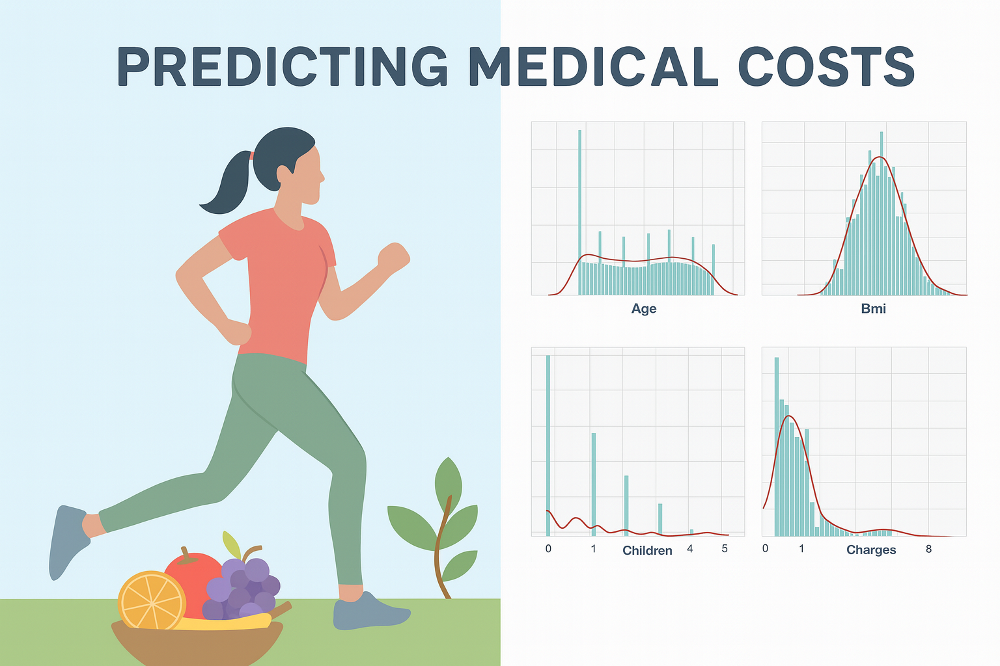
Introduction
1. Key Results
- Charges generally rise with age.
- Smokers consistently have higher and more variable charges than non-smokers.
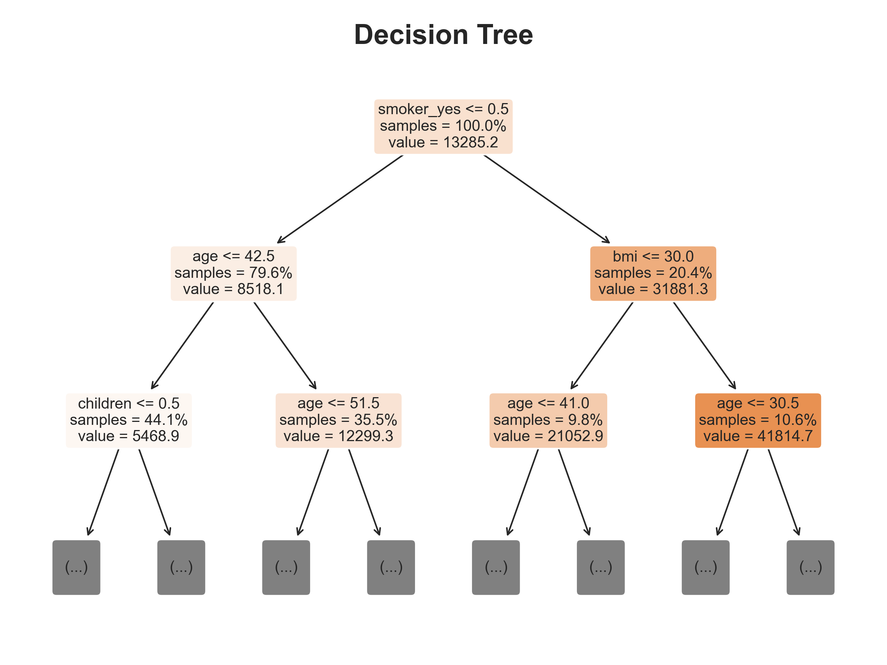
2. Why It Matters
Predicting medical costs isn’t just a math problem — it’s about understanding the real price of our health choices. For insurers, these predictions guide fairer pricing and risk assessment. For individuals, they reveal how habits like smoking or maintaining a healthy BMI can shape future expenses. In a world where healthcare costs can make or break financial stability, this kind of model helps turn data into smarter, more informed decisions.
3. The Data
The dataset comes from the Medical Cost Personal Dataset on Kaggle, containing 1,338 observations, each representing a single U.S. health insurance policyholder. Key features include age, sex, BMI, number of children, smoker status, and region. The target variable, charges, captures each person’s annual medical cost, ranging from about $1,000 to over $60,000. Despite its small size, the dataset offers rich insights into how lifestyle and demographics drive healthcare expenses.
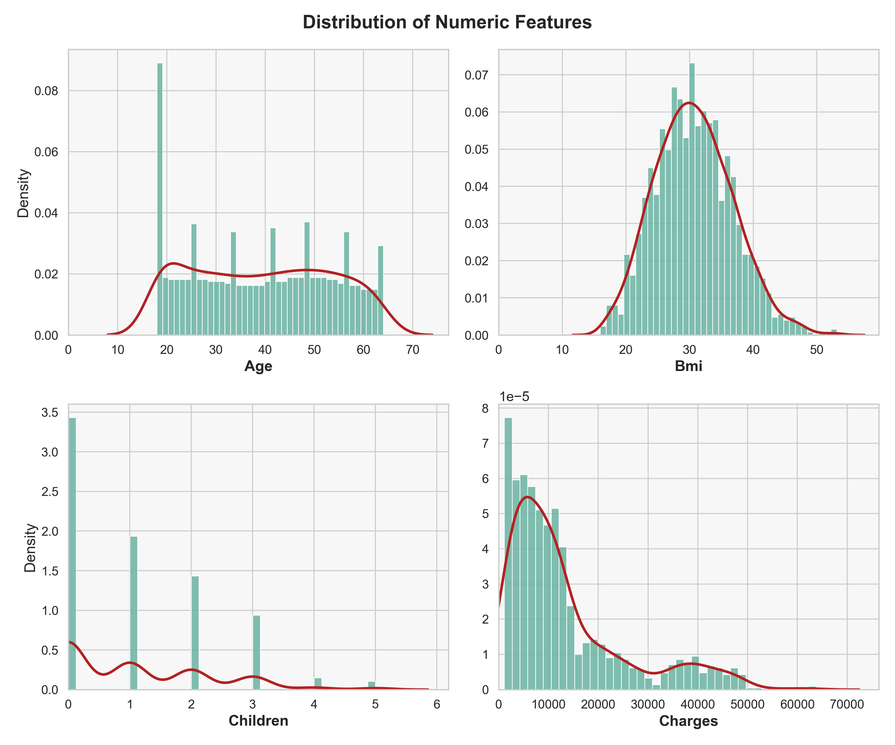
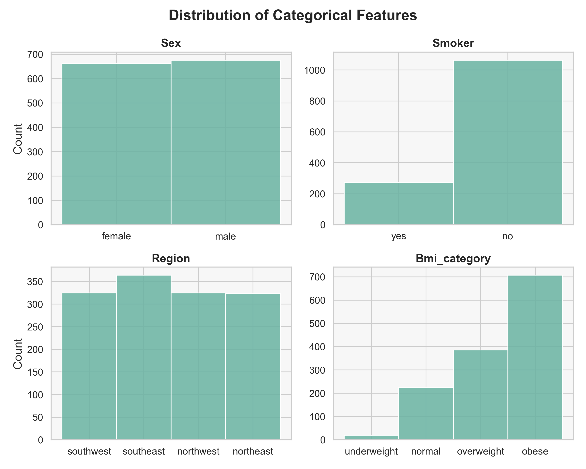
Methods & Results
4. What I Did
Explored the medical cost dataset with visuals — distributions, correlations, and feature effects — to link age, BMI, and smoking to charges. Cleaned numeric features with StandardScaler and categorical variables with OneHotEncoder. Trained LinearRegression, SVR, DecisionTreeRegressor, and RandomForestRegressor, tuning hyperparameters with RandomizedSearchCV. Evaluated MAE, MSE, RMSE, and R² on the test set and compared models visually.
5. What I Found
Insurance charges tend to increase with age. Smokers have significantly higher and more variable charges compared to non-smokers, whose costs show a smoother, more consistent trend.
Among smokers, insurance charges generally increase with higher BMI, while BMI has little impact on costs for non-smokers. Within non-smokers, age drives costs.
Feature importance analysis (from the tree-based models) highlighted smoking, age, and BMI as the top predictors — confirming both domain expectations and model consistency.
The Random Forest Regressor achieved the best results, with the lowest RMSE (≈ 4354) and highest R² (≈ 0.88), indicating strong predictive accuracy and generalization on unseen data, showing that it is possible to predict medical costs based on key personal and lifestyle factors. This demonstrates that data-driven models can effectively capture the underlying relationships between health behaviors and medical expenses, enabling more accurate cost forecasting and better-informed healthcare and policy decisions.
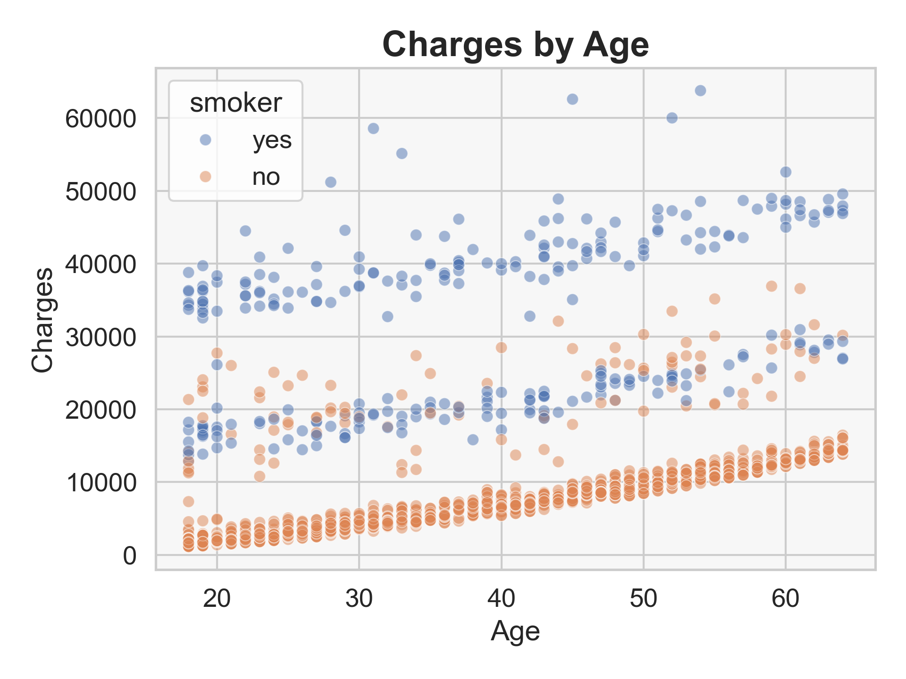
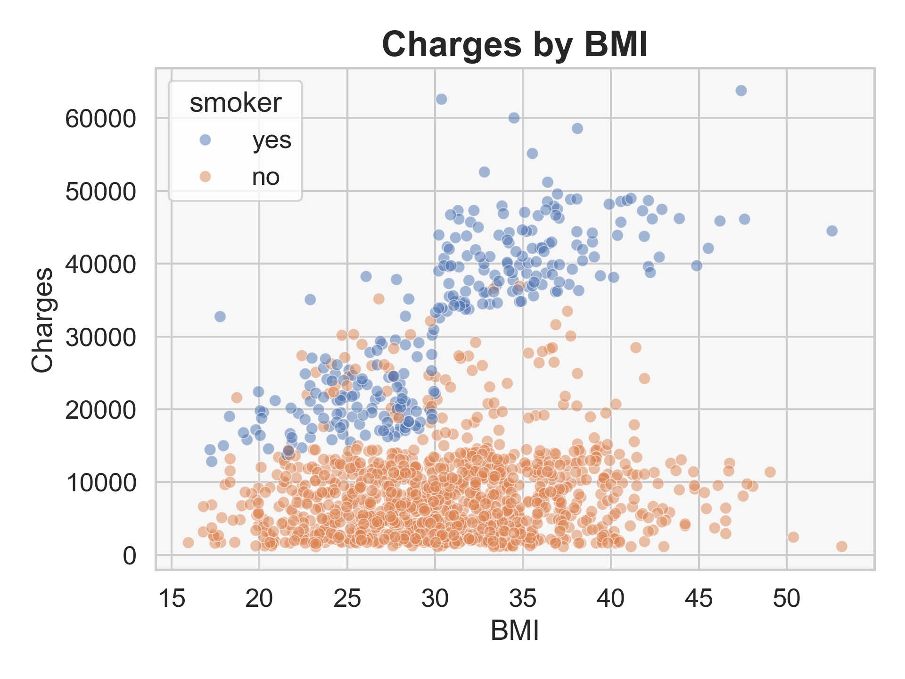
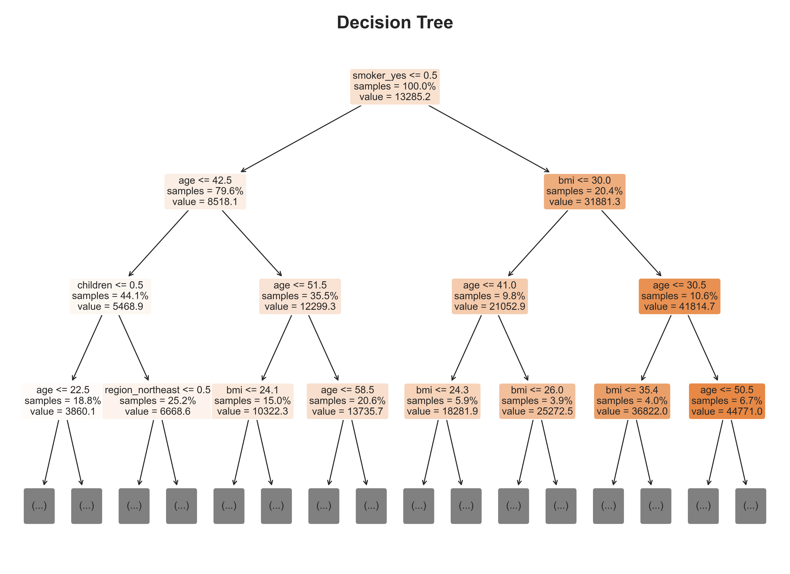
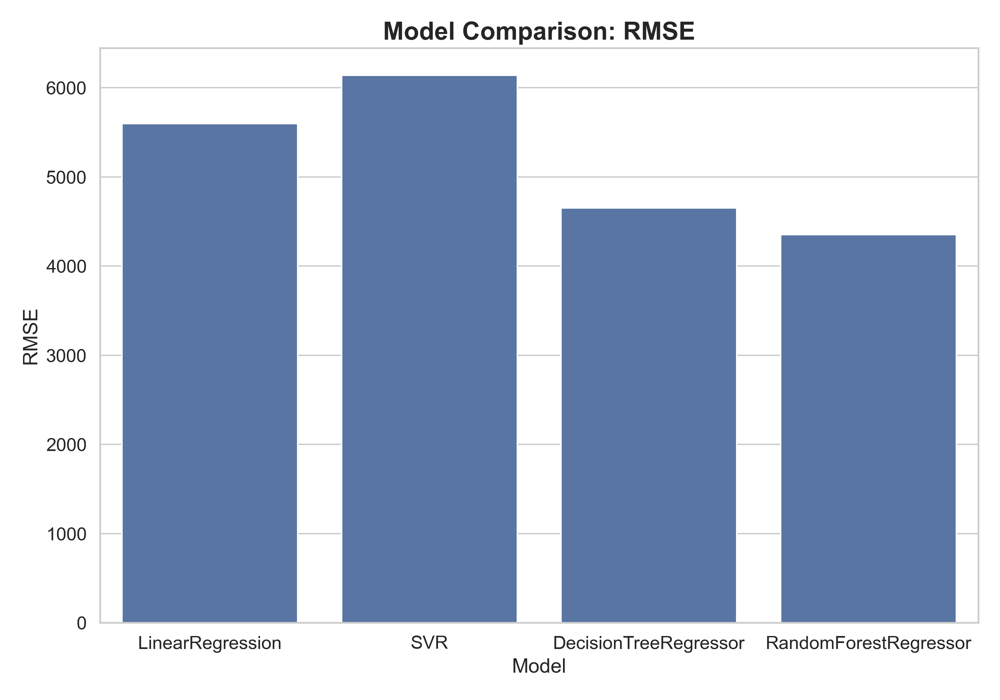
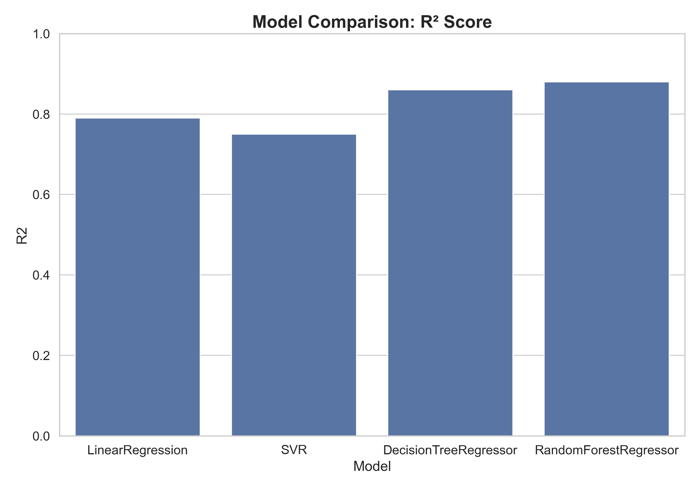
Conclusion
6. What I Learned
Model performance improved with complexity:
Tree-based models, especially Random Forest, captured the nonlinear impact of health and lifestyle factors most effectively. The findings align with real-world intuition — smokers and older individuals face substantially higher insurance costs.
7. What’s Next
This project shows that predicting medical costs is possible — but there’s room to grow. Future work could explore more advanced models like Gradient Boosting or XGBoost to see if they capture even subtler patterns in the data. Another direction is adding richer features to improve model depth and realism. Finally, scaling this work to larger, more diverse datasets would help assess how well these findings hold up across different populations. The next steps are open — it’s up to you to take this foundation and push it further.
Credits
You can find the Notebook here:
Inspired by Chapter 2 from Hands-On Machine Learning with Scikit-Learn, Keras, and TensorFlow, 3rd Edition by Aurélien Géron
Download the Notebook{download}
donladtest{download}
Behind The Scenes (My Code)
Loading the data and checking out the first 5 rows
df = pd.read_csv("data/insurance.csv")df.head()| age | sex | bmi | children | smoker | region | charges | |
|---|---|---|---|---|---|---|---|
| 0 | 19 | female | 27.900 | 0 | yes | southwest | 16884.92400 |
| 1 | 18 | male | 33.770 | 1 | no | southeast | 1725.55230 |
| 2 | 28 | male | 33.000 | 3 | no | southeast | 4449.46200 |
| 3 | 33 | male | 22.705 | 0 | no | northwest | 21984.47061 |
| 4 | 32 | male | 28.880 | 0 | no | northwest | 3866.85520 |
EDA
Checking the structure of the DataFrame
df.info()<class 'pandas.core.frame.DataFrame'>
RangeIndex: 1338 entries, 0 to 1337
Data columns (total 7 columns):
# Column Non-Null Count Dtype
--- ------ -------------- -----
0 age 1338 non-null int64
1 sex 1338 non-null object
2 bmi 1338 non-null float64
3 children 1338 non-null int64
4 smoker 1338 non-null object
5 region 1338 non-null object
6 charges 1338 non-null float64
dtypes: float64(2), int64(2), object(3)
memory usage: 73.3+ KBChecking for missing values
# -> no missing values
df.isnull().sum()age 0
sex 0
bmi 0
children 0
smoker 0
region 0
charges 0
dtype: int64Creating a new column with catrgorical BMI features
BMI Categories
| BMI Category | BMI Range |
|---|---|
| Underweight | Below 18.5 |
| Healthy | 18.5 – 24.9 |
| Overweight | 25.0 – 29.9 |
| Obesity | 30.0 or above |
bins = [0, 18.5, 25, 30, float("inf")]
labels = ["underweight", "normal", "overweight", "obese"]
df["BMI_category"] = pd.cut(df["bmi"], bins=bins, labels=labels, right=False)Plotting the distribution of the numeric columns
numeric_columns = ['age', 'bmi', 'children', 'charges']
fig, axes = plt.subplots(2, 2, figsize=(12,10), sharey=False)
fig.suptitle("Distribution of Numeric Features", fontsize=18, weight="bold")
R, C = axes.shape
for k, (ax, col) in enumerate(zip(axes.flat, numeric_columns)):
j = k % C # 0 % 2 = 0; 1%2 = 1
sns.histplot(
data=df,
x=col,
bins=40,
ax=ax,
stat="density",
color="#69b3a2",
edgecolor="white",
alpha=0.85,
)
sns.kdeplot(
data=df,
x=col,
ax=ax,
color="#b22222",
linewidth=2.5,
)
#ax.set_title(col.capitalize(), fontsize=14, weight="semibold")
ax.set_xlabel(col.capitalize(), weight="semibold")
ax.set_ylabel("Density" if j == 0 else "")
ax.set_xlim(left=0)
ax.tick_params(axis="both", labelsize=12)
ax.set_facecolor("#f7f7f7")
fig.tight_layout(pad=1.5)
save_fig("numeric_dist_histplot")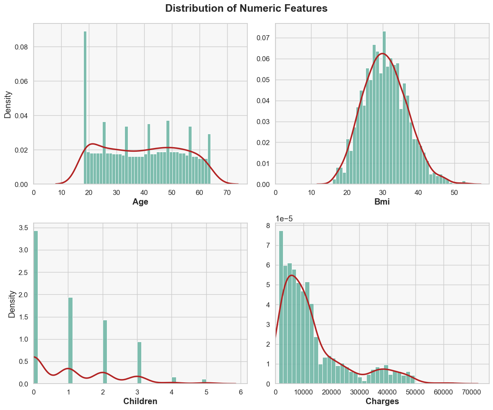
Plotting the distribution of categorical columns
categorial_columns = ['sex', 'smoker', 'region', 'BMI_category']
fig, axes = plt.subplots(2, 2, figsize=(10,8), sharey=False)
fig.suptitle("Distribution of Categorical Features", fontsize=18, weight="bold")
R, C = axes.shape
for k, (ax, col) in enumerate(zip(axes.flat, categorial_columns)):
j = k % C
sns.histplot(
data=df,
x=col,
bins=40,
ax=ax,
stat="count",
color="#69b3a2",
edgecolor="white",
alpha=0.85,
)
ax.set_title(col.capitalize(), fontsize=14, weight="semibold")
ax.set_xlabel("")
ax.set_ylabel("Count" if j == 0 else "")
ax.tick_params(axis="both", labelsize=12)
ax.tick_params(axis="both", labelsize=12)
ax.set_facecolor("#f7f7f7")
fig.tight_layout(pad=1.5)
save_fig("cat_dist_histplot")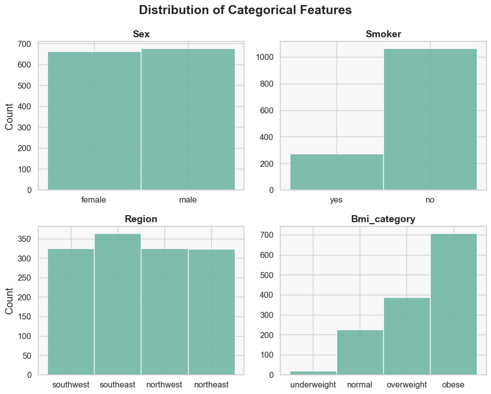
df["sex"].value_counts()sex
male 676
female 662
Name: count, dtype: int64df["smoker"].value_counts()smoker
no 1064
yes 274
Name: count, dtype: int64df["region"].value_counts()region
southeast 364
southwest 325
northwest 325
northeast 324
Name: count, dtype: int64df["BMI_category"].value_counts()BMI_category
obese 707
overweight 386
normal 225
underweight 20
Name: count, dtype: int64Taking a look at the target variable
df["charges"].describe()count 1338.000000
mean 13270.422265
std 12110.011237
min 1121.873900
25% 4740.287150
50% 9382.033000
75% 16639.912515
max 63770.428010
Name: charges, dtype: float64# Insights:
# Charges generally rise with age
# Smokers have higher charges than non-smokers
# Smokers not only have higher average charges, but their costs are much more spread out
# non-smokers trend is smoother
sns.scatterplot(df, x="age", y="charges", alpha=0.5, hue="smoker")
plt.title("Charges by Age", fontsize=18, weight="bold")
plt.xlabel("Age")
plt.ylabel("Charges")
plt.legend(loc="best", title="smoker")
ax = plt.gca()
ax.set_facecolor("#f7f7f7")
plt.tight_layout()
save_fig("age_vs_charges")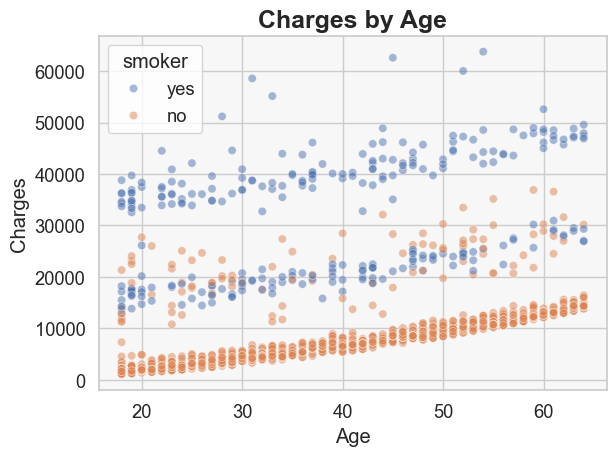
# Insights
# Charges increase with age across all BMI categories.
# However, BMI category alone does not create clear separation in charges — there’s considerable overlap between normal, overweight, and obese groups.
# The large vertical gaps between charge levels likely stem from other variables (e.g., smoking).
# Overall, BMI has a smaller impact on charges than age or smoking status.
plt.figure(figsize=(9,6))
sns.scatterplot(df, x="age", y="charges", alpha=0.5, hue="BMI_category")
plt.title("Charges by Age")
plt.xlabel("Age")
plt.ylabel("Charges")
plt.legend(loc=[1.05, 0.3], title="BMI Category")
ax = plt.gca()
ax.set_facecolor("#f7f7f7")
plt.tight_layout()
save_fig("age_vs_charges_bmi")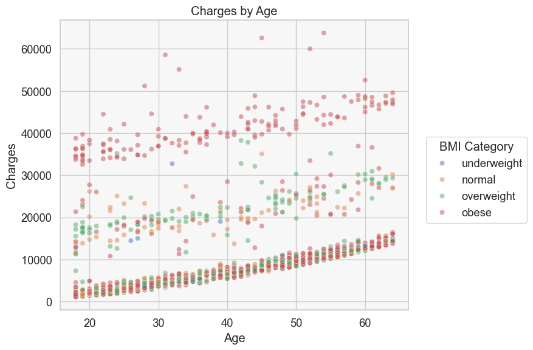
# Insights:
# For somkers Charges generally rise with BMI
# Smokers have higher charges than non-smokers
# For non-smokers bmi has little effect
sns.scatterplot(df, x="bmi", y="charges", alpha=0.5, hue="smoker") # higher BMI -> higher charges
plt.title("Charges by BMI", fontsize=18, weight="bold")
plt.xlabel("BMI")
plt.ylabel("Charges")
plt.legend(loc="best", title="smoker")
ax = plt.gca()
ax.set_facecolor("#f7f7f7")
plt.tight_layout()
save_fig("bmi_vs_charges")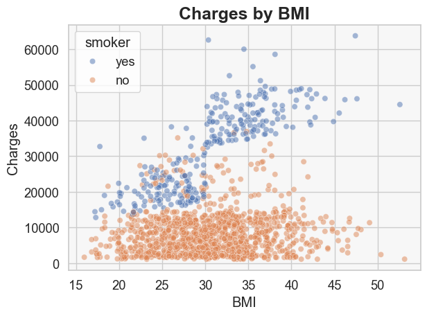
Check the correlation between Smoking and BMI on the charges
df[df.smoker=="yes"].charges.corr(df[df.smoker=="yes"].bmi)0.8064806070155408df[df.smoker=="no"].charges.corr(df[df.smoker=="no"].bmi)0.08403654312833271# Insights:
# Charges strongly correlate to being a smoker
# Age and BMI follow respectively
df["smoker_flag"] = df["smoker"].map({"yes": 1, "no": 0})
df["sex_flag"] = df["sex"].map({"female": 0, "male": 1})
df.corr(numeric_only=True)["charges"].sort_values(ascending=False)charges 1.000000
smoker_flag 0.787251
age 0.299008
bmi 0.198341
children 0.067998
sex_flag 0.057292
Name: charges, dtype: float64Preprocessing
df = pd.read_csv("data/insurance.csv")df.head()| age | sex | bmi | children | smoker | region | charges | |
|---|---|---|---|---|---|---|---|
| 0 | 19 | female | 27.900 | 0 | yes | southwest | 16884.92400 |
| 1 | 18 | male | 33.770 | 1 | no | southeast | 1725.55230 |
| 2 | 28 | male | 33.000 | 3 | no | southeast | 4449.46200 |
| 3 | 33 | male | 22.705 | 0 | no | northwest | 21984.47061 |
| 4 | 32 | male | 28.880 | 0 | no | northwest | 3866.85520 |
num_pipeline = Pipeline([
("imputer", SimpleImputer(strategy="median")),
("scaler", StandardScaler())
])
cat_pipeline = Pipeline([
("imputer", SimpleImputer(strategy="most_frequent")),
("onehot", OneHotEncoder(drop="if_binary"))
])from sklearn.compose import ColumnTransformer, make_column_selector
preprocessing = ColumnTransformer([
("num", num_pipeline, make_column_selector(dtype_include=np.number)),
("cat", cat_pipeline, make_column_selector(dtype_include=object))
])tree_num_pipeline = Pipeline([
("imputer", SimpleImputer(strategy="median"))
])
tree_preprocessing = ColumnTransformer([
("num", tree_num_pipeline, make_column_selector(dtype_include=np.number)),
("cat", cat_pipeline, make_column_selector(dtype_include=object))
])Train Test Split
X = df.drop("charges", axis=1)y = df["charges"]X_train, X_test, y_train, y_test = train_test_split(X, y, test_size=0.15, random_state=42)print(f"X_train: {X_train.shape}; y_train: {y_train.shape}\nX_test: {X_test.shape}; y_test: {y_test.shape}")X_train: (1137, 6); y_train: (1137,)
X_test: (201, 6); y_test: (201,)Training a Model
def metrics(y_true, y_pred):
MAE = mean_absolute_error(y_true, y_pred)
print(f"MAE: {MAE}")
MSE = mean_squared_error(y_true, y_pred)
RMSE = np.sqrt(MSE)
print(f"MSE: {MSE}\nRMSE: {RMSE}")LinearRegression
linear_reg = make_pipeline(preprocessing, LinearRegression())linear_reg_score = -cross_val_score(linear_reg, X_train, y_train, cv=5, scoring="neg_root_mean_squared_error")pd.Series(linear_reg_score).describe()count 5.000000
mean 6173.951563
std 211.241338
min 5926.581771
25% 6070.880265
50% 6156.104487
75% 6219.280117
max 6496.911172
dtype: float64SVR
svr_model = make_pipeline(preprocessing, SVR())svr_score = -cross_val_score(svr_model, X_train, y_train, cv=5, scoring="neg_root_mean_squared_error")pd.Series(svr_score).describe()count 5.000000
mean 12595.037950
std 1099.948405
min 11392.920185
25% 11770.593709
50% 12616.341217
75% 13004.470299
max 14190.864341
dtype: float64param_grid = {
"svr__C": [0.1, 1, 10, 1000],
"svr__gamma": ['scale', 'auto', 0.01, 0.1, 1],
"svr__kernel": ['rbf', 'linear'],
"svr__epsilon": [0.01, 0.1, 0.5]
}
svr_tuned = RandomizedSearchCV(svr_model, param_distributions=param_grid, cv=3, n_iter= 100, scoring="neg_root_mean_squared_error", random_state=42, n_jobs=-1, verbose=3)
svr_tuned.fit(X_train, y_train)Fitting 3 folds for each of 100 candidates, totalling 300 fitsRandomizedSearchCV(cv=3,
estimator=Pipeline(steps=[('columntransformer',
ColumnTransformer(transformers=[('num',
Pipeline(steps=[('imputer',
SimpleImputer(strategy='median')),
('scaler',
StandardScaler())]),
<sklearn.compose._column_transformer.make_column_selector object at 0x00000269773A09B0>),
('cat',
Pipeline(steps=[('imputer',
SimpleImputer(strategy='most_...
OneHotEncoder(drop='if_binary'))]),
<sklearn.compose._column_transformer.make_column_selector object at 0x00000269773A2780>)])),
('svr', SVR())]),
n_iter=100, n_jobs=-1,
param_distributions={'svr__C': [0.1, 1, 10, 1000],
'svr__epsilon': [0.01, 0.1, 0.5],
'svr__gamma': ['scale', 'auto', 0.01,
0.1, 1],
'svr__kernel': ['rbf', 'linear']},
random_state=42, scoring='neg_root_mean_squared_error',
verbose=3)In a Jupyter environment, please rerun this cell to show the HTML representation or trust the notebook. On GitHub, the HTML representation is unable to render, please try loading this page with nbviewer.org.
RandomizedSearchCV(cv=3,
estimator=Pipeline(steps=[('columntransformer',
ColumnTransformer(transformers=[('num',
Pipeline(steps=[('imputer',
SimpleImputer(strategy='median')),
('scaler',
StandardScaler())]),
<sklearn.compose._column_transformer.make_column_selector object at 0x00000269773A09B0>),
('cat',
Pipeline(steps=[('imputer',
SimpleImputer(strategy='most_...
OneHotEncoder(drop='if_binary'))]),
<sklearn.compose._column_transformer.make_column_selector object at 0x00000269773A2780>)])),
('svr', SVR())]),
n_iter=100, n_jobs=-1,
param_distributions={'svr__C': [0.1, 1, 10, 1000],
'svr__epsilon': [0.01, 0.1, 0.5],
'svr__gamma': ['scale', 'auto', 0.01,
0.1, 1],
'svr__kernel': ['rbf', 'linear']},
random_state=42, scoring='neg_root_mean_squared_error',
verbose=3)Pipeline(steps=[('columntransformer',
ColumnTransformer(transformers=[('num',
Pipeline(steps=[('imputer',
SimpleImputer(strategy='median')),
('scaler',
StandardScaler())]),
<sklearn.compose._column_transformer.make_column_selector object at 0x00000269773A09B0>),
('cat',
Pipeline(steps=[('imputer',
SimpleImputer(strategy='most_frequent')),
('onehot',
OneHotEncoder(drop='if_binary'))]),
<sklearn.compose._column_transformer.make_column_selector object at 0x00000269773A2780>)])),
('svr', SVR())])ColumnTransformer(transformers=[('num',
Pipeline(steps=[('imputer',
SimpleImputer(strategy='median')),
('scaler', StandardScaler())]),
<sklearn.compose._column_transformer.make_column_selector object at 0x00000269773A09B0>),
('cat',
Pipeline(steps=[('imputer',
SimpleImputer(strategy='most_frequent')),
('onehot',
OneHotEncoder(drop='if_binary'))]),
<sklearn.compose._column_transformer.make_column_selector object at 0x00000269773A2780>)])<sklearn.compose._column_transformer.make_column_selector object at 0x00000269773A09B0>
SimpleImputer(strategy='median')
StandardScaler()
<sklearn.compose._column_transformer.make_column_selector object at 0x00000269773A2780>
SimpleImputer(strategy='most_frequent')
OneHotEncoder(drop='if_binary')
SVR()
svr_score = -svr_tuned.best_score_
svr_score7333.541404442819svr_tuned.best_params_{'svr__kernel': 'linear',
'svr__gamma': 'scale',
'svr__epsilon': 0.01,
'svr__C': 1000}DecisionTree
Using a simple DecisionTree as a baseline
dt = make_pipeline(tree_preprocessing, DecisionTreeRegressor(max_depth=3))
dt.fit(X_train, y_train)Pipeline(steps=[('columntransformer',
ColumnTransformer(transformers=[('num',
Pipeline(steps=[('imputer',
SimpleImputer(strategy='median'))]),
<sklearn.compose._column_transformer.make_column_selector object at 0x00000269760A4AD0>),
('cat',
Pipeline(steps=[('imputer',
SimpleImputer(strategy='most_frequent')),
('onehot',
OneHotEncoder(drop='if_binary'))]),
<sklearn.compose._column_transformer.make_column_selector object at 0x000002696F9D7DA0>)])),
('decisiontreeregressor', DecisionTreeRegressor(max_depth=3))])In a Jupyter environment, please rerun this cell to show the HTML representation or trust the notebook. On GitHub, the HTML representation is unable to render, please try loading this page with nbviewer.org.
Pipeline(steps=[('columntransformer',
ColumnTransformer(transformers=[('num',
Pipeline(steps=[('imputer',
SimpleImputer(strategy='median'))]),
<sklearn.compose._column_transformer.make_column_selector object at 0x00000269760A4AD0>),
('cat',
Pipeline(steps=[('imputer',
SimpleImputer(strategy='most_frequent')),
('onehot',
OneHotEncoder(drop='if_binary'))]),
<sklearn.compose._column_transformer.make_column_selector object at 0x000002696F9D7DA0>)])),
('decisiontreeregressor', DecisionTreeRegressor(max_depth=3))])ColumnTransformer(transformers=[('num',
Pipeline(steps=[('imputer',
SimpleImputer(strategy='median'))]),
<sklearn.compose._column_transformer.make_column_selector object at 0x00000269760A4AD0>),
('cat',
Pipeline(steps=[('imputer',
SimpleImputer(strategy='most_frequent')),
('onehot',
OneHotEncoder(drop='if_binary'))]),
<sklearn.compose._column_transformer.make_column_selector object at 0x000002696F9D7DA0>)])<sklearn.compose._column_transformer.make_column_selector object at 0x00000269760A4AD0>
SimpleImputer(strategy='median')
<sklearn.compose._column_transformer.make_column_selector object at 0x000002696F9D7DA0>
SimpleImputer(strategy='most_frequent')
OneHotEncoder(drop='if_binary')
DecisionTreeRegressor(max_depth=3)
base_decision_tree_score = -cross_val_score(dt, X_train, y_train, cv=5, scoring="neg_root_mean_squared_error")pd.Series(base_decision_tree_score).describe()count 5.000000
mean 4869.172374
std 295.376724
min 4446.480626
25% 4768.196718
50% 4829.922649
75% 5142.062041
max 5159.199837
dtype: float64Using RandomizedSearch to find the best parameters for the Decisiontree
param_grid = {
"decisiontreeregressor__max_depth": range(2,20),
"decisiontreeregressor__min_samples_split": range(2,10),
"decisiontreeregressor__min_samples_leaf": range(1,10),
"decisiontreeregressor__max_features": ["sqrt", "log2", None]
}
rnd_decision_tree = RandomizedSearchCV(dt, param_distributions=param_grid, n_iter=100, cv=3, scoring="neg_root_mean_squared_error", random_state=42)
rnd_decision_tree.fit(X_train, y_train)RandomizedSearchCV(cv=3,
estimator=Pipeline(steps=[('columntransformer',
ColumnTransformer(transformers=[('num',
Pipeline(steps=[('imputer',
SimpleImputer(strategy='median'))]),
<sklearn.compose._column_transformer.make_column_selector object at 0x00000269760A4AD0>),
('cat',
Pipeline(steps=[('imputer',
SimpleImputer(strategy='most_frequent')),
('onehot',
OneHot...
('decisiontreeregressor',
DecisionTreeRegressor(max_depth=3))]),
n_iter=100,
param_distributions={'decisiontreeregressor__max_depth': range(2, 20),
'decisiontreeregressor__max_features': ['sqrt',
'log2',
None],
'decisiontreeregressor__min_samples_leaf': range(1, 10),
'decisiontreeregressor__min_samples_split': range(2, 10)},
random_state=42, scoring='neg_root_mean_squared_error')In a Jupyter environment, please rerun this cell to show the HTML representation or trust the notebook. On GitHub, the HTML representation is unable to render, please try loading this page with nbviewer.org.
RandomizedSearchCV(cv=3,
estimator=Pipeline(steps=[('columntransformer',
ColumnTransformer(transformers=[('num',
Pipeline(steps=[('imputer',
SimpleImputer(strategy='median'))]),
<sklearn.compose._column_transformer.make_column_selector object at 0x00000269760A4AD0>),
('cat',
Pipeline(steps=[('imputer',
SimpleImputer(strategy='most_frequent')),
('onehot',
OneHot...
('decisiontreeregressor',
DecisionTreeRegressor(max_depth=3))]),
n_iter=100,
param_distributions={'decisiontreeregressor__max_depth': range(2, 20),
'decisiontreeregressor__max_features': ['sqrt',
'log2',
None],
'decisiontreeregressor__min_samples_leaf': range(1, 10),
'decisiontreeregressor__min_samples_split': range(2, 10)},
random_state=42, scoring='neg_root_mean_squared_error')Pipeline(steps=[('columntransformer',
ColumnTransformer(transformers=[('num',
Pipeline(steps=[('imputer',
SimpleImputer(strategy='median'))]),
<sklearn.compose._column_transformer.make_column_selector object at 0x00000269760A4AD0>),
('cat',
Pipeline(steps=[('imputer',
SimpleImputer(strategy='most_frequent')),
('onehot',
OneHotEncoder(drop='if_binary'))]),
<sklearn.compose._column_transformer.make_column_selector object at 0x000002696F9D7DA0>)])),
('decisiontreeregressor', DecisionTreeRegressor(max_depth=3))])ColumnTransformer(transformers=[('num',
Pipeline(steps=[('imputer',
SimpleImputer(strategy='median'))]),
<sklearn.compose._column_transformer.make_column_selector object at 0x00000269760A4AD0>),
('cat',
Pipeline(steps=[('imputer',
SimpleImputer(strategy='most_frequent')),
('onehot',
OneHotEncoder(drop='if_binary'))]),
<sklearn.compose._column_transformer.make_column_selector object at 0x000002696F9D7DA0>)])<sklearn.compose._column_transformer.make_column_selector object at 0x00000269760A4AD0>
SimpleImputer(strategy='median')
<sklearn.compose._column_transformer.make_column_selector object at 0x000002696F9D7DA0>
SimpleImputer(strategy='most_frequent')
OneHotEncoder(drop='if_binary')
DecisionTreeRegressor(max_depth=3)
rnd_decision_tree.best_params_{'decisiontreeregressor__min_samples_split': 4,
'decisiontreeregressor__min_samples_leaf': 9,
'decisiontreeregressor__max_features': None,
'decisiontreeregressor__max_depth': 4}-rnd_decision_tree.best_score_4770.267010134789rnd_decision_tree.best_estimator_Pipeline(steps=[('columntransformer',
ColumnTransformer(transformers=[('num',
Pipeline(steps=[('imputer',
SimpleImputer(strategy='median'))]),
<sklearn.compose._column_transformer.make_column_selector object at 0x000002694062E750>),
('cat',
Pipeline(steps=[('imputer',
SimpleImputer(strategy='most_frequent')),
('onehot',
OneHotEncoder(drop='if_binary'))]),
<sklearn.compose._column_transformer.make_column_selector object at 0x0000026976C13410>)])),
('decisiontreeregressor',
DecisionTreeRegressor(max_depth=4, min_samples_leaf=9,
min_samples_split=4))])In a Jupyter environment, please rerun this cell to show the HTML representation or trust the notebook. On GitHub, the HTML representation is unable to render, please try loading this page with nbviewer.org.
Pipeline(steps=[('columntransformer',
ColumnTransformer(transformers=[('num',
Pipeline(steps=[('imputer',
SimpleImputer(strategy='median'))]),
<sklearn.compose._column_transformer.make_column_selector object at 0x000002694062E750>),
('cat',
Pipeline(steps=[('imputer',
SimpleImputer(strategy='most_frequent')),
('onehot',
OneHotEncoder(drop='if_binary'))]),
<sklearn.compose._column_transformer.make_column_selector object at 0x0000026976C13410>)])),
('decisiontreeregressor',
DecisionTreeRegressor(max_depth=4, min_samples_leaf=9,
min_samples_split=4))])ColumnTransformer(transformers=[('num',
Pipeline(steps=[('imputer',
SimpleImputer(strategy='median'))]),
<sklearn.compose._column_transformer.make_column_selector object at 0x000002694062E750>),
('cat',
Pipeline(steps=[('imputer',
SimpleImputer(strategy='most_frequent')),
('onehot',
OneHotEncoder(drop='if_binary'))]),
<sklearn.compose._column_transformer.make_column_selector object at 0x0000026976C13410>)])<sklearn.compose._column_transformer.make_column_selector object at 0x000002694062E750>
SimpleImputer(strategy='median')
<sklearn.compose._column_transformer.make_column_selector object at 0x0000026976C13410>
SimpleImputer(strategy='most_frequent')
OneHotEncoder(drop='if_binary')
DecisionTreeRegressor(max_depth=4, min_samples_leaf=9, min_samples_split=4)
decision_tree_score = -cross_val_score(rnd_decision_tree.best_estimator_, X_train, y_train, cv=5, scoring="neg_root_mean_squared_error")pd.Series(decision_tree_score).describe()count 5.000000
mean 4752.431458
std 311.946236
min 4308.317556
25% 4619.560739
50% 4755.759409
75% 4969.267050
max 5109.252536
dtype: float64best_tree = rnd_decision_tree.best_estimator_["decisiontreeregressor"]
best_treeDecisionTreeRegressor(max_depth=4, min_samples_leaf=9, min_samples_split=4)In a Jupyter environment, please rerun this cell to show the HTML representation or trust the notebook.
On GitHub, the HTML representation is unable to render, please try loading this page with nbviewer.org.
DecisionTreeRegressor(max_depth=4, min_samples_leaf=9, min_samples_split=4)
# Insights:
# First splits on smoking -> confirming smoking dominates the cost signal
# For the smokers, BMI is the next important factor
# For non-smokers age is the next important factor
feature_names = rnd_decision_tree.best_estimator_["columntransformer"].get_feature_names_out()
pretty_names = [f.split("__")[-1] for f in feature_names]
fig, ax = plt.subplots(figsize=(11, 8), dpi=400)
plot_tree(
best_tree,
max_depth=3,
feature_names=pretty_names,
filled=True,
rounded=True,
fontsize=10,
proportion=True, # show % of samples instead of counts
impurity=False, # hide squared_error
precision=1, # shorter numbers
ax=ax
)
plt.title("Decision Tree", fontsize=18, weight="bold")
plt.tight_layout()
save_fig("Decision_Tree_plot", resolution=400)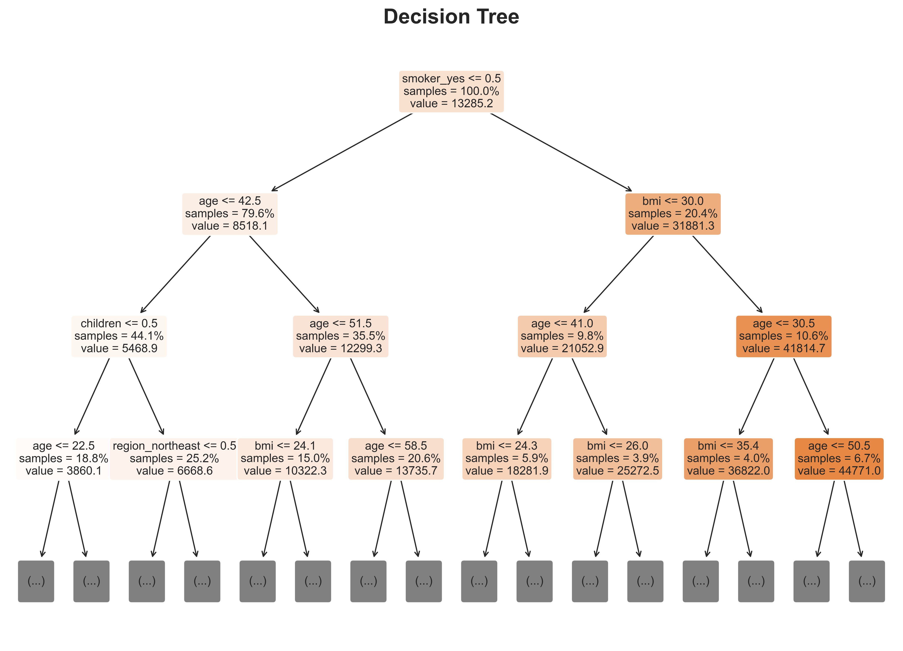
Smaller iamges for the Blog:
feature_names = rnd_decision_tree.best_estimator_["columntransformer"].get_feature_names_out()
pretty_names = [f.split("__")[-1] for f in feature_names]
fig, ax = plt.subplots(figsize=(8, 6), dpi=300)
plot_tree(
best_tree,
max_depth=2,
feature_names=pretty_names,
filled=True,
rounded=True,
fontsize=10,
proportion=True, # show % of samples instead of counts
impurity=False, # hide squared_error
precision=1, # shorter numbers
ax=ax
)
plt.title("Decision Tree", fontsize=18, weight="bold")
plt.tight_layout()
save_fig("Decision_Tree_plot_small")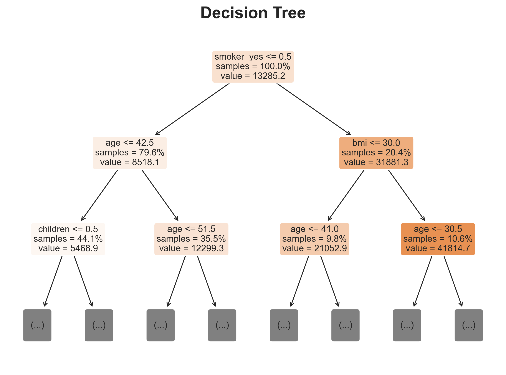
RandomForestRegressor
rfr = make_pipeline(tree_preprocessing, RandomForestRegressor())base_random_forest_score = -cross_val_score(rfr, X_train, y_train, cv=5, scoring="neg_root_mean_squared_error")pd.Series(base_random_forest_score).describe()count 5.000000
mean 4877.139833
std 293.198791
min 4441.898586
25% 4733.486913
50% 4949.047954
75% 5123.462899
max 5137.802811
dtype: float64
param_grid = {
"randomforestregressor__n_estimators": range(50,200),
"randomforestregressor__max_depth": range(2,40),
"randomforestregressor__min_samples_split": range(2,10),
"randomforestregressor__min_samples_leaf": range(1,10),
"randomforestregressor__max_features": ["sqrt", "log2", None]
}
rnd_forest = RandomizedSearchCV(rfr, param_distributions=param_grid, n_iter=100, scoring="neg_root_mean_squared_error", random_state=42)
rnd_forest.fit(X_train, y_train)RandomizedSearchCV(estimator=Pipeline(steps=[('columntransformer',
ColumnTransformer(transformers=[('num',
Pipeline(steps=[('imputer',
SimpleImputer(strategy='median'))]),
<sklearn.compose._column_transformer.make_column_selector object at 0x00000269760A4AD0>),
('cat',
Pipeline(steps=[('imputer',
SimpleImputer(strategy='most_frequent')),
('onehot',
OneHotEncod...
n_iter=100,
param_distributions={'randomforestregressor__max_depth': range(2, 40),
'randomforestregressor__max_features': ['sqrt',
'log2',
None],
'randomforestregressor__min_samples_leaf': range(1, 10),
'randomforestregressor__min_samples_split': range(2, 10),
'randomforestregressor__n_estimators': range(50, 200)},
random_state=42, scoring='neg_root_mean_squared_error')In a Jupyter environment, please rerun this cell to show the HTML representation or trust the notebook. On GitHub, the HTML representation is unable to render, please try loading this page with nbviewer.org.
RandomizedSearchCV(estimator=Pipeline(steps=[('columntransformer',
ColumnTransformer(transformers=[('num',
Pipeline(steps=[('imputer',
SimpleImputer(strategy='median'))]),
<sklearn.compose._column_transformer.make_column_selector object at 0x00000269760A4AD0>),
('cat',
Pipeline(steps=[('imputer',
SimpleImputer(strategy='most_frequent')),
('onehot',
OneHotEncod...
n_iter=100,
param_distributions={'randomforestregressor__max_depth': range(2, 40),
'randomforestregressor__max_features': ['sqrt',
'log2',
None],
'randomforestregressor__min_samples_leaf': range(1, 10),
'randomforestregressor__min_samples_split': range(2, 10),
'randomforestregressor__n_estimators': range(50, 200)},
random_state=42, scoring='neg_root_mean_squared_error')Pipeline(steps=[('columntransformer',
ColumnTransformer(transformers=[('num',
Pipeline(steps=[('imputer',
SimpleImputer(strategy='median'))]),
<sklearn.compose._column_transformer.make_column_selector object at 0x00000269760A4AD0>),
('cat',
Pipeline(steps=[('imputer',
SimpleImputer(strategy='most_frequent')),
('onehot',
OneHotEncoder(drop='if_binary'))]),
<sklearn.compose._column_transformer.make_column_selector object at 0x000002696F9D7DA0>)])),
('randomforestregressor', RandomForestRegressor())])ColumnTransformer(transformers=[('num',
Pipeline(steps=[('imputer',
SimpleImputer(strategy='median'))]),
<sklearn.compose._column_transformer.make_column_selector object at 0x00000269760A4AD0>),
('cat',
Pipeline(steps=[('imputer',
SimpleImputer(strategy='most_frequent')),
('onehot',
OneHotEncoder(drop='if_binary'))]),
<sklearn.compose._column_transformer.make_column_selector object at 0x000002696F9D7DA0>)])<sklearn.compose._column_transformer.make_column_selector object at 0x00000269760A4AD0>
SimpleImputer(strategy='median')
<sklearn.compose._column_transformer.make_column_selector object at 0x000002696F9D7DA0>
SimpleImputer(strategy='most_frequent')
OneHotEncoder(drop='if_binary')
RandomForestRegressor()
rnd_forest.best_params_{'randomforestregressor__n_estimators': 58,
'randomforestregressor__min_samples_split': 7,
'randomforestregressor__min_samples_leaf': 3,
'randomforestregressor__max_features': None,
'randomforestregressor__max_depth': 5}-rnd_forest.best_score_4621.142167648941random_forest_score = -cross_val_score(rnd_forest.best_estimator_, X_train, y_train, cv=5, scoring="neg_root_mean_squared_error")pd.Series(random_forest_score).describe()count 5.000000
mean 4616.455082
std 359.807740
min 4048.132168
25% 4533.837089
50% 4709.176946
75% 4786.871966
max 5004.257239
dtype: float64Comparing Models
# Training all models on the full training set and then predicting on the test set
models = [linear_reg, svr_tuned.best_estimator_, rnd_decision_tree.best_estimator_, rnd_forest.best_estimator_]
model_names = ["LinearRegression", "SVR", "DecisionTreeRegressor", "RandomForestRegressor"]
all_scores = {}
for name, model in zip(model_names, models):
model.fit(X_train, y_train)
y_pred = model.predict(X_test)
MAE = mean_absolute_error(y_test, y_pred)
MSE = mean_squared_error(y_test, y_pred)
RMSE = np.sqrt(MSE)
r2 = r2_score(y_test, y_pred)
all_scores[name] = {"MAE": round(MAE,2), "MSE": round(MSE,2), "RMSE": round(RMSE,2), "R2": round(r2,2)}
df_model_comparison = pd.DataFrame(all_scores).Tdf_model_comparison.index.name = "Models"df_model_comparison| MAE | MSE | RMSE | R2 | |
|---|---|---|---|---|
| Models | ||||
| LinearRegression | 4092.36 | 31333268.50 | 5597.61 | 0.79 |
| SVR | 3373.30 | 37706594.68 | 6140.57 | 0.75 |
| DecisionTreeRegressor | 2755.59 | 21655894.86 | 4653.59 | 0.86 |
| RandomForestRegressor | 2459.69 | 18958974.55 | 4354.19 | 0.88 |
df_model_comparison.to_csv("data/model_comparison_metrics.csv")# comparing RMSE across all models
plt.figure(figsize=(10,7))
sns.barplot(data=df_model_comparison, x="Models", y="RMSE")
plt.title("Model Comparison: RMSE", fontsize=18, weight="bold")
plt.xlabel("Model")
plt.ylabel("RMSE")
#plt.ylim(0,1)
plt.tight_layout()
save_fig("RMSE_score")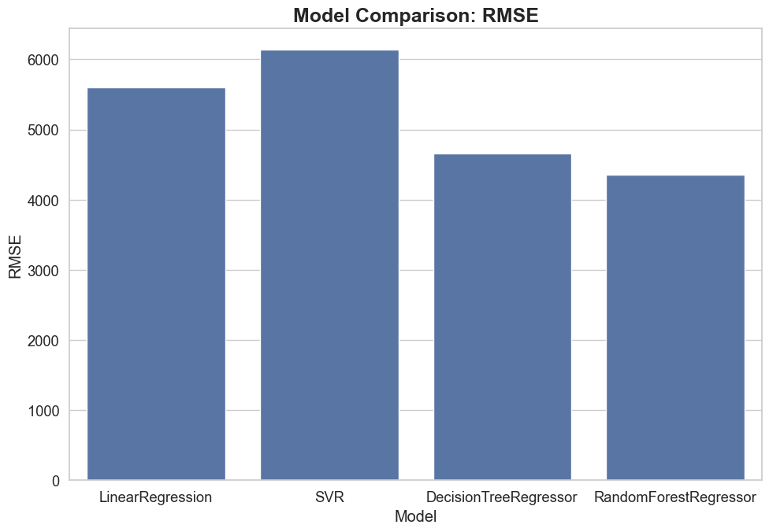
# Normalize so that lowest RMSE → 1, highest → 0
rmse_norm = 1 - (df_model_comparison["RMSE"] - df_model_comparison["RMSE"].min()) / (df_model_comparison["RMSE"].max() - df_model_comparison["RMSE"].min())rmse_normModels
LinearRegression 0.303944
SVR 0.000000
DecisionTreeRegressor 0.832398
RandomForestRegressor 1.000000
Name: RMSE, dtype: float64# comparing RMSE across all models
plt.figure(figsize=(10,7))
sns.barplot(data=df_model_comparison, x="Models", y=rmse_norm)
plt.title("Model Comparison: Normalized RMSE", fontsize=18, weight="bold")
plt.xlabel("Model")
plt.ylabel("Normalized RMSE Score")
#plt.ylim(0,1)
plt.tight_layout()
save_fig("RMSE_score_norm")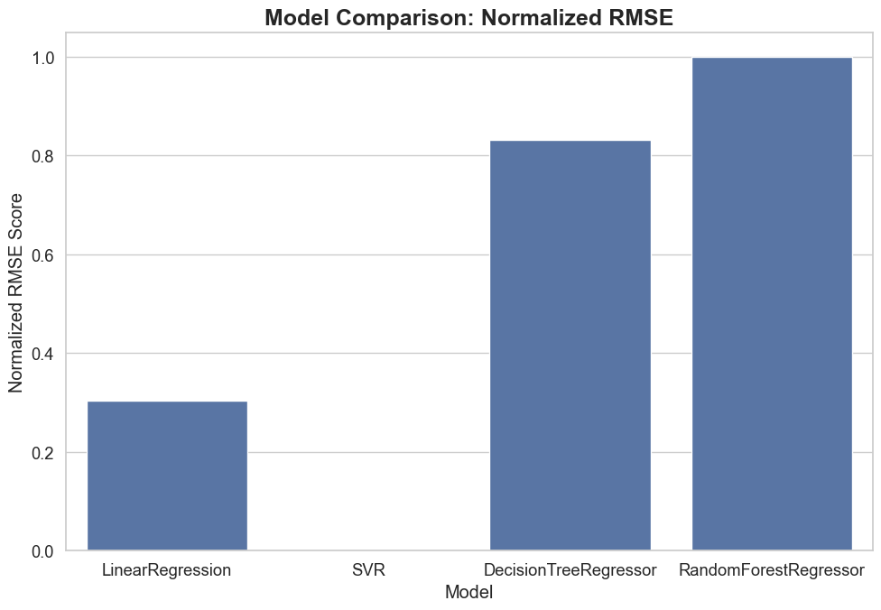
# comparing R2 score across all models
plt.figure(figsize=(10,7))
sns.barplot(data=df_model_comparison, x="Models", y="R2")
plt.title("Model Comparison: R² Score", fontsize=18, weight="bold")
plt.xlabel("Model")
plt.ylabel("R2")
plt.ylim(0,1)
plt.tight_layout()
save_fig("R2_score")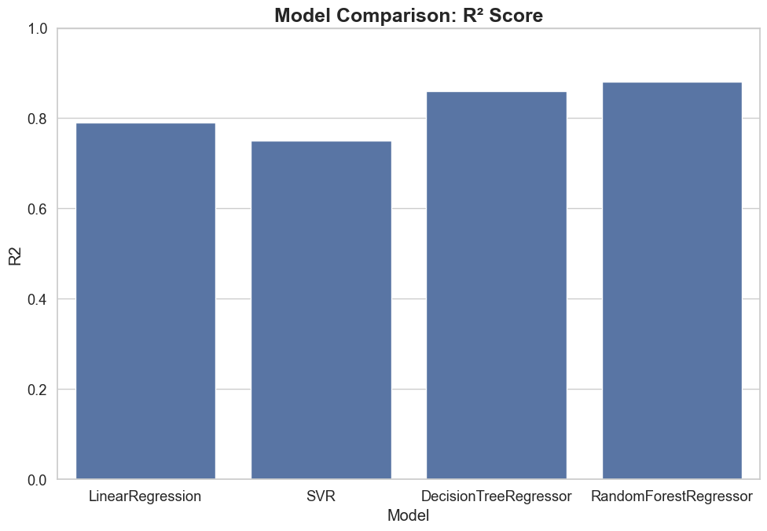